Mayors Arts Awards
(MAA)
Team Members:
Karissa Place
Sean Chen
Anna Weddle
Tia Zook
Natalie Rokosz
Jessica Hord
Studio 165+ is a design collective within the Ball State University Visual Communications department. After an extensive portfolio review, eleven students were selected and separated into two groups, each given different clients. Our group’s client was the Muncie Arts and Culture Council and we were tasked with creating an identity system for the Muncie Mayor’s Arts Awards, as well as many other promotional and event-related items.
Mayor’s Arts Awards (MAA) are celebrated in many cities across the country. These awards allow cities to bestow a prestigious honor upon individual artists, teachers, nonprofit organizations, and/or patrons of the arts. These awards recognize varying contributions to the cultural community as well. The Muncie Arts and Culture Council (MACC) is proud to implement this program for the City of Muncie.
Phase two included a sponsorship packet and nomination forms. The Muncie Arts and Cultural Council uses the sponsorship packet to bring in money for the Mayor’s Arts Awards. The sponsors are represented in a variety of ways throughout the event. The nomination form allows the Muncie community to acknowledge a local artist for one of the eight awards.
The third phase contains the program that will be given out at the event, invitations for the nominees and sponsors, signage for the event, and event promotional items. Within this phase, we created items that will help showcase the winners and promote the event within the Muncie community.


 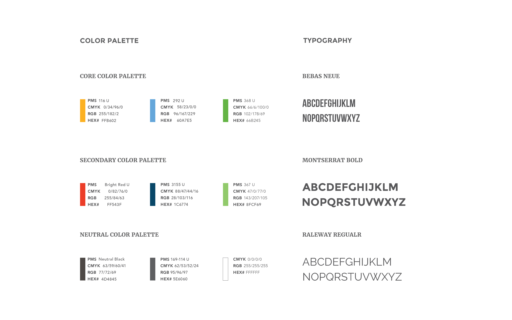
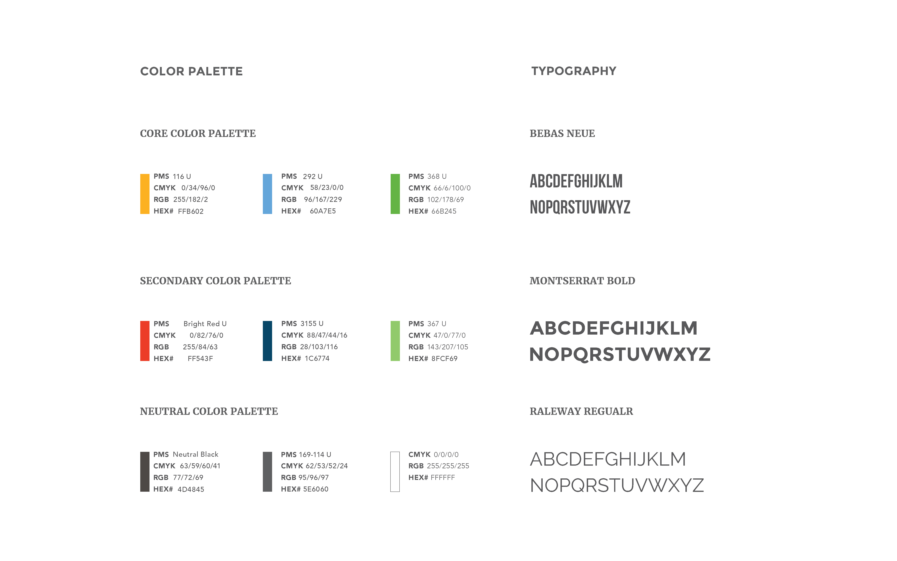


 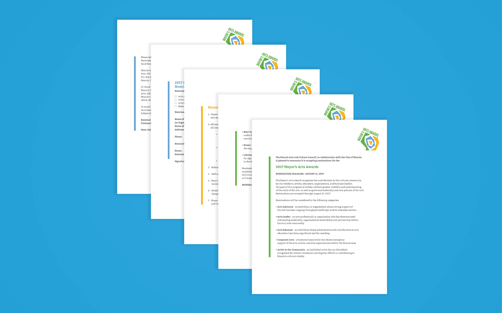
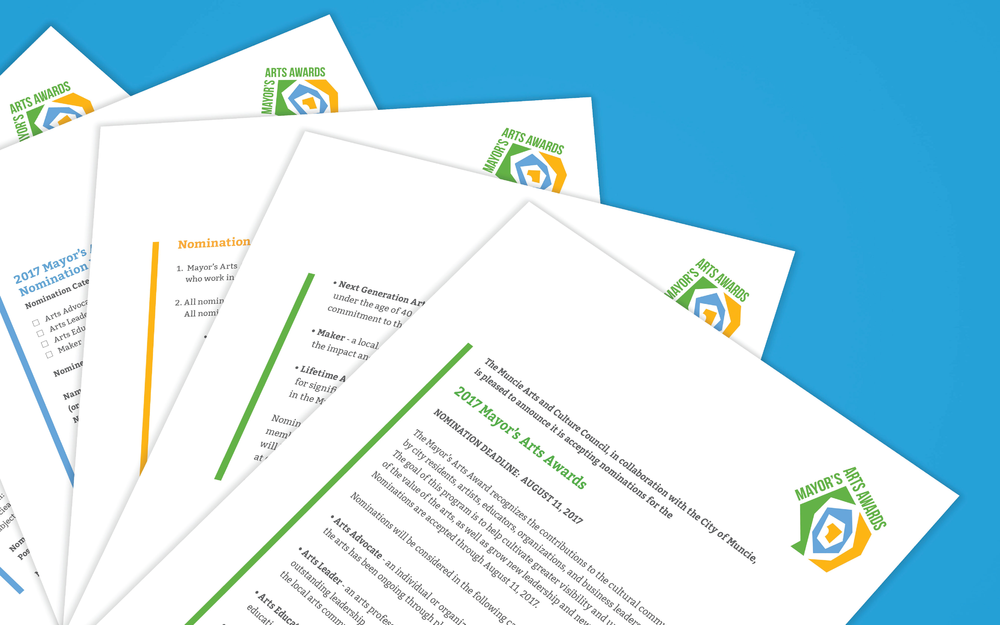
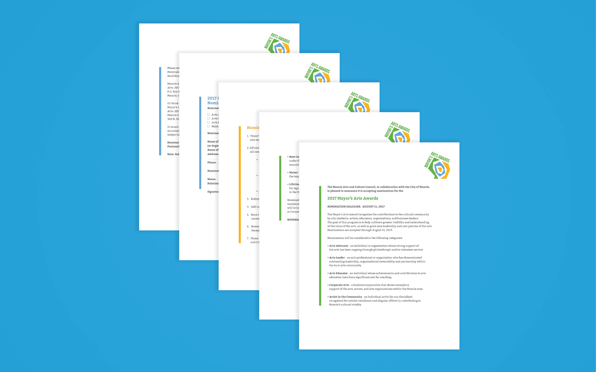
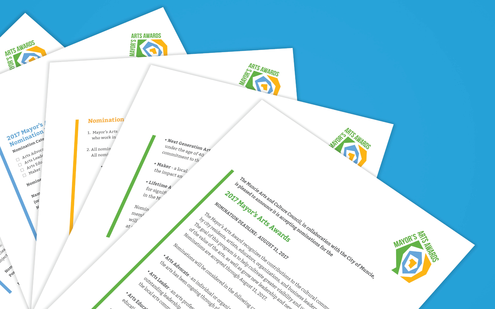

 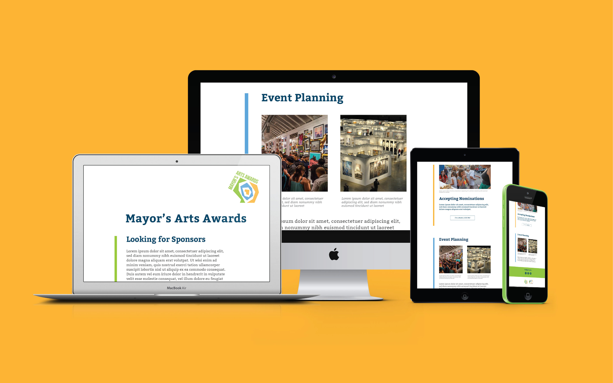
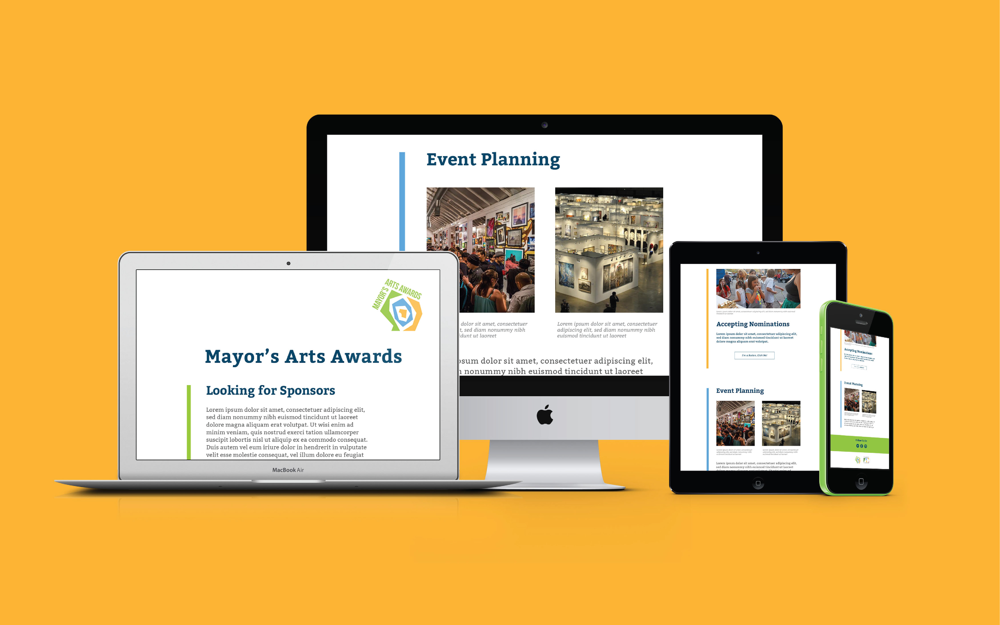
 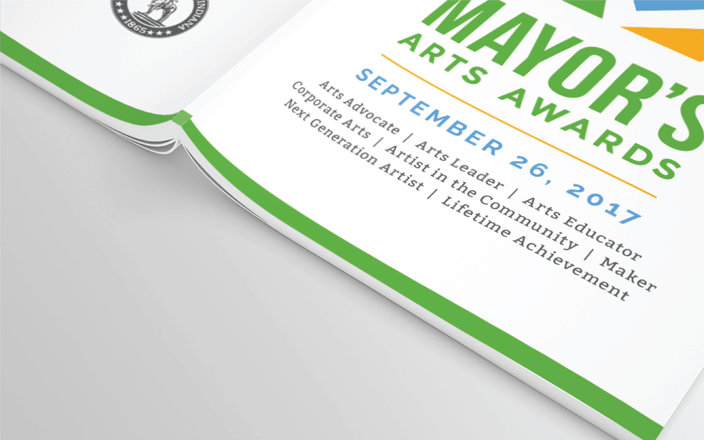
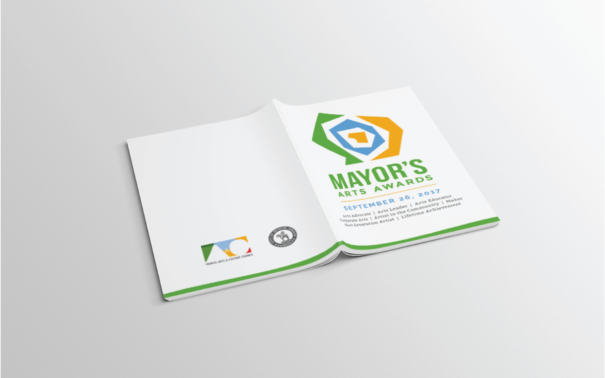
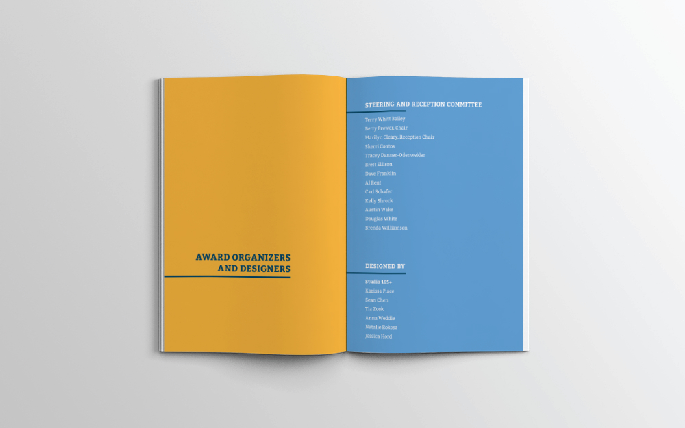
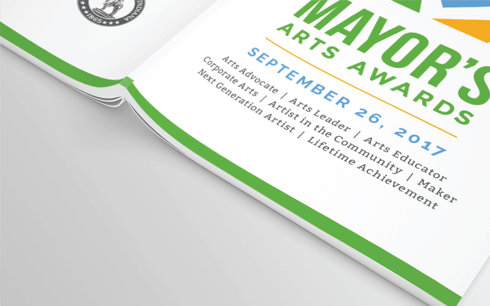
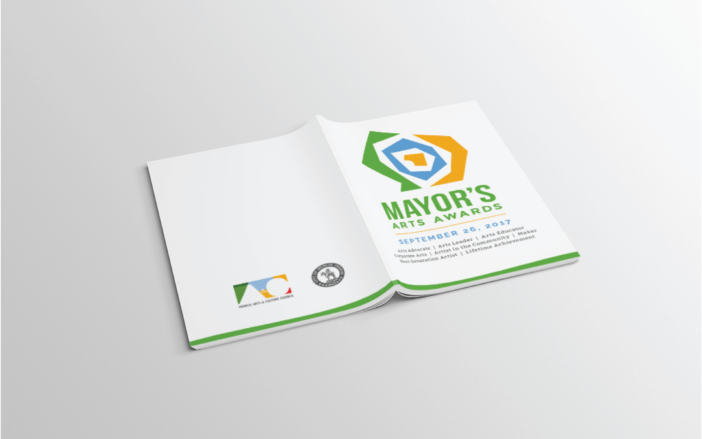
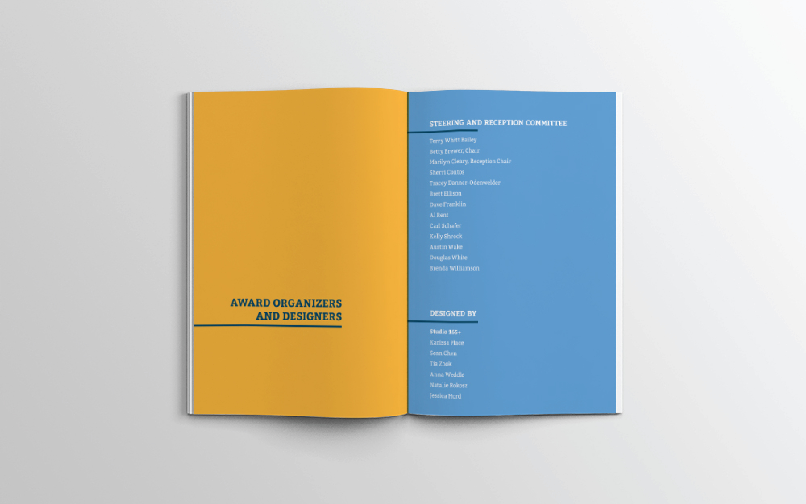